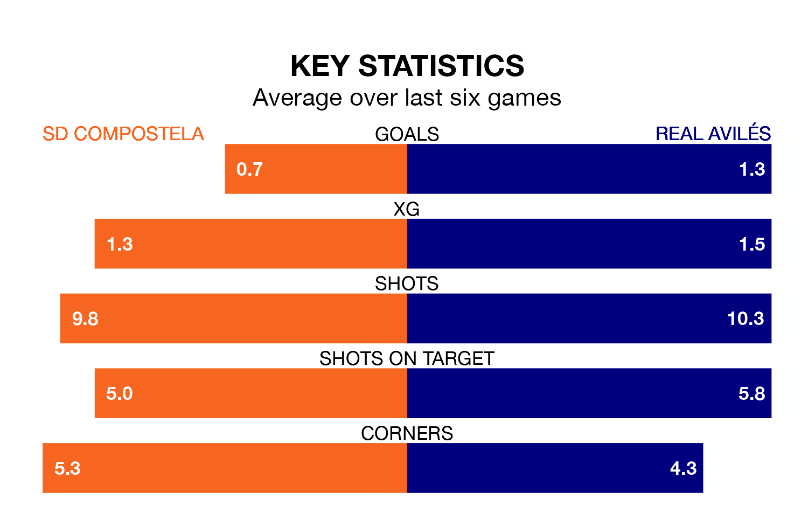

Real Avilés travel to SD Compostela on early Sunday in the Segunda División RFEF Group 1.
The visitors come into the game on the back of a win in their last match, having beaten Covadonga 3-1 at home, with goals from Natalio Lorenzo Poquet and Claudio Medina Ricoy.
Compostela also won their last match, 1-0 against Real Oviedo B.
With 31 goals in 32 games so far this season, Compostela are scoring at below the league average rate with 1.0 goals per game. But they are conceding fewer than average too, letting in 34 goals at a rate of 1.1 per game.
Avilés, meanwhile, are average scorers, with 1.2 goals per game. They have conceded 1.0 goal per game.
In the last 10 years, Compostela and Avilés have played each other on seven occasions. Compostela won four of them, Avilés two, and they drew once.
On average, Compostela scored 2.0 goals and Avilés 1.3 in those matches.
Their last meeting was on December 17, when Avilés won 2-1 at home.
The home side are seventh in the table after 32 games, of which they have won 12 and drawn eight, earning 44 points.
The visitors are two places behind Compostela in ninth, with nine wins and 14 draws putting them on 41 points.
Compostela are in mixed form in the Segunda División RFEF Group 1, with two wins and two draws from their last six games.
With two wins and a draw over that period, Avilés's form is slightly worse – they have taken seven points from 18, compared to the hosts' eight.
Updated: 07:59 (UTC), 26/04/24